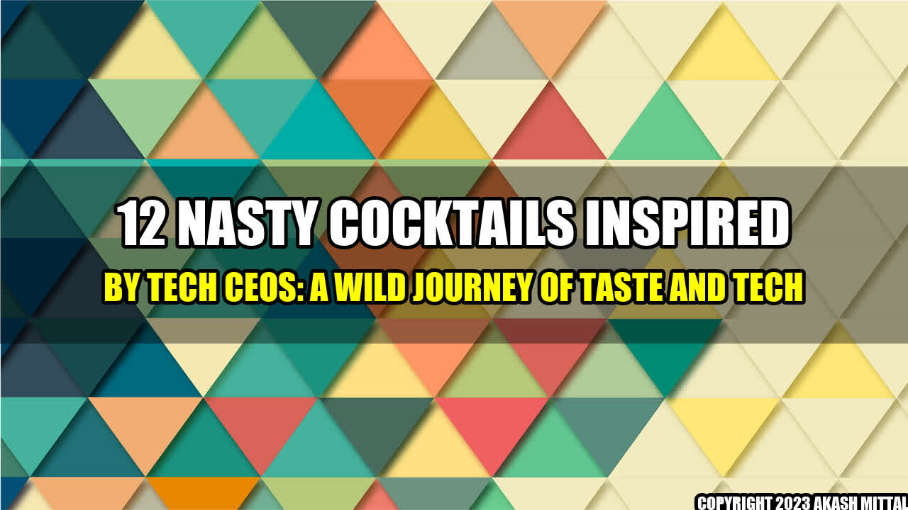

Introduction
 I have heard of many bizarre cocktails, but nothing quite like the creations that ChatGPT and Bard made inspired by tech CEOs. These cocktails are not only delicious but also unique, just like the tech executives who inspired them. As someone who loves tech and cocktails, I was intrigued by this combination, and I had to try them all out. The results were surprising, and I can't wait to share my experience with you.
12 Cocktails Inspired by Tech CEOs
The following cocktails are inspired by some of the most famous tech CEOs you've probably heard of. Each drink has a unique flavor profile, inspired by the persona and characteristics of the CEO.
1. Elon Musk- Teslaquila Sunrise
This spicy and sweet cocktail inspired by the founder of Tesla has a tropical taste with a twist of spicy tequila.
2. Jeff Bezos - Amazon Jungle Juice
This cocktail is as wild and adventurous as the founder of Amazon. It's a fruity and sweet drink with a hint of vodka, perfect for a hot summer day.
3. Mark Zuckerberg - Blue Facebook
This drink is just as ubiquitous as the social media platform Facebook. The Blue Facebook is a classic drink with a blend of blue curacao and vodka.
4. Steve Jobs - Apple-tini
The Apple-tini is as classic as the founder of Apple's iconic black turtlenecks. This drink has a refreshing blend of sour apple schnapps and vodka.
5. Bill Gates - Microsoft Mojito
This mojito is a sweet and sour blend of Microsoft's iconic blue color with a hint of mint.
6. Larry Page - Google Grasshopper
This drink has a little bit of everything, just like the Google empire. The Google Grasshopper is a creamy blend of creme de menthe and chocolate liqueur.
7. Tim Cook - Apple Cider Mule
This drink is inspired by the CEO of Apple and has a warm, cozy taste with a bit of a bite. The Apple Cider Mule is a perfect drink for the fall with its blend of apple cider, vodka, and ginger beer.
8. Oprah Winfrey - Talk Show Tea
This talk show inspired tea cocktail has a light and fruity taste perfect for an afternoon tea party.
9. Sundar Pichai - Indian Mule
This cocktail is inspired by the CEO of Google and has a refreshing taste with a spice kick. The Indian Mule has a blend of ginger beer, lime juice, and Indian spices.
10. Jack Dorsey - Twitter-tini
This cocktail is as simple and straightforward as the platform Twitter. The Twitter-tini has a simple blend of vodka and cranberry juice.
11. Jeff Weiner - Networking Negroni
This cocktail has a bold and complex taste, just like the CEO of LinkedIn. The Networking Negroni is a classic Negroni with a twist of orange juice.
12. Sheryl Sandberg - Lean In Lady
This cocktail is inspired by the author of "Lean In," and it's a bold and empowering drink. The Lean In Lady has a blend of tequila, lemon juice, and club soda.
Conclusion
The combination of tech and cocktails brings together two seemingly different worlds, but surprisingly, they complement each other quite well. These 12 nasty cocktails give a whole new flavor to the tech industry and add a bit of fun and creativity to the mundane. If you're up for a wild journey of taste and tech, I highly recommend you try out these drinks for yourselves. Here are the 3 points to remember about the article: - These nasty drinks are inspired by the unique personalities and personas of different tech CEOs. - Each drink has a unique taste that represents the characteristics of the tech executive it is inspired by. - Mixing tech and cocktails can bring a new fun twist to the industry.
References
Hashtags
SEO Keywords
Article Category:
Entertainment
Akash Mittal Tech Article
Share on Twitter Share on LinkedIn